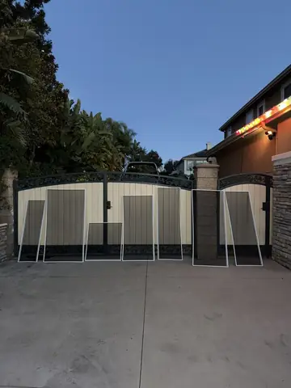
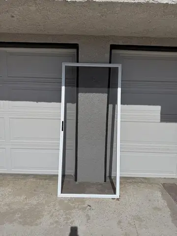
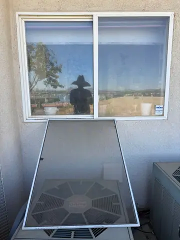

Inicio/Reparación de mosquiteros
Hesperia y todo el High DesertReparación de mosquiteros en tu casa
Malla nueva en el momento, en tu cochera, desde $53.99 por mosquitero. Todo clima $64.99. Mejora completa desde $84.99 con malla solar y marco nuevo.
El sol del desierto pega casi todo el año, la malla del constructor se pone quebradiza y luego el viento la rompe. Revisamos los marcos y cambiamos la malla según el trabajo acordado. Confirmamos servicio en tu domicilio o recogida con devolución y reinstalación, junto con el plazo previsto.
Lee nuestras reseñas en Google · Inspección gratis · Satisfacción garantizada
¿Quieres ver trabajos de reparación de mosquiteros que hemos hecho?
Fotos de nuestros propios trabajos. Toca una para verla más grande.

Un juego completo con malla nueva
Mosquitero de puerta corrediza
Spring Valley Lake · Malla nueva para todo clima


¿Te gusta lo que ves? Arma tu proyecto aquí abajo.
Cuéntale a Tony qué necesita tu propiedad
Elige uno o varios servicios y una fecha preferida. Tony confirma personalmente el trabajo, el precio final y la cita. No se cobra aquí.
Malla de control solar All-Weather
Para ventanas con sol directo, el material está especificado para bloquear hasta el 80% del calor solar y del deslumbramiento según las especificaciones del fabricante. Es poliéster recubierto de vinilo, resistente a mascotas, decoloración y moho, y funciona como mosquitero. Se limpia con agua y jabón suave.
Su tejido más denso aporta sombra y puede mejorar el confort, pero también cambia la vista, la ventilación y la luz. No promete reducir un 80% la temperatura, el calor total de la casa ni la factura. Resistente a mascotas no significa indestructible.
Confirmamos el material de la cotización. Las especificaciones del material no sustituyen la cobertura de instalación indicada por escrito.
Un marco que encaje y una malla con tensión pareja
Un buen mosquitero necesita un marco que encaje en la ventana y una malla con tensión pareja. Revisamos el marco, las esquinas y los clips; cambiamos la malla si el marco está bien o recomendamos reemplazarlo si está doblado o falta. Puedes elegir fibra de vidrio gris o malla de control solar All-Weather de poliéster recubierto de vinilo. Te explicamos las diferencias de vista y ventilación antes de cotizar.
¿Necesito malla nueva o un marco nuevo?
Un marco recto con esquinas firmes puede necesitar solamente malla y empaque nuevos. Los marcos doblados, dañados o faltantes requieren otro alcance. La cotización por escrito distingue el cambio de malla del reemplazo de marco.
¿La malla todo clima resiste cualquier mascota y hay un mínimo?
Todo clima es una opción de material, no una promesa de que una mascota no pueda dañarla. Las visitas solo para mosquiteros conservan el mínimo de $149; los descuentos no lo reducen. Si se agregan a otro servicio, su precio aparece en esa cotización.
Revisa las opciones y pide tu cotización
Tony confirma el día solicitado después de revisar la disponibilidad.
Dos mallas, el mismo trabajo cuidadoso
Malla estándar, desde $53.99
La misma clase de malla que usó el constructor, instalada y tensada bien. La vista más clara y buen paso de aire. Bien para ventanas con sombra.
Mejora All-Weather, desde $64.99
Poliéster recubierto de vinilo, resistente a mascotas, decoloración y moho. Aporta sombra y puede reducir el calor solar directo y el deslumbramiento. Explicamos cómo cambia la vista, la ventilación y la luz.
Mejora completa desde $84.99
Si el marco está doblado, flojo o le faltan esquinas, la malla nueva no queda firme. Rehacemos el marco a la medida de tu ventana con esquinas y clips nuevos, con malla de control solar en la mejora completa; otras combinaciones se evalúan aparte.
Mosquiteros de puerta corrediza
Una puerta corrediza se estima en más o menos el doble de un mosquitero de ventana con la misma malla: $107.98 con fibra de vidrio gris o $129.98 con malla de control solar All-Weather. Es un estimado: Tony confirma el precio cuando ve la puerta. Si el marco está doblado o las rodajas o la manija están dañadas, te da un precio por escrito antes de empezar.
Cuánto cuesta
$53.99 por mosquitero con fibra de vidrio gris y $64.99 con malla de control solar All-Weather. Los trabajos solo de mosquiteros llevan recogida e inspección, y otra cita confirmada de entrega, instalación y solo la limpieza del acuerdo por escrito. Los servicios combinados se acuerdan para cada proyecto. La mejora completa con malla solar y marco nuevo empieza en $84.99 por mosquitero elegible.
Si los mosquiteros son el único servicio, hay un mínimo de $149 por trabajo, y ningún descuento lo baja. Con una limpieza de ventanas no hay mínimo. Si reservas en nuestro sitio, la primera visita tiene 10% de descuento, siempre sin bajar de $149 cuando son solo mosquiteros.
Cobertura del material y de la instalación por escrito
Tu cotización indica la cobertura aplicable del material y la instalación, las exclusiones y cómo solicitar atención. Las especificaciones del fabricante no son una garantía de instalación de Tony. Los acuerdos existentes por escrito no cambian.
Preguntas sobre mosquiteros
¿Cuánto cuesta cambiar la malla de un mosquitero?
La malla estándar empieza en $53.99 con marco existente utilizable. La mejora All-Weather empieza en $64.99 con marco utilizable. La mejora completa empieza en $84.99 con malla de control solar All-Weather y marco nuevo a medida. Mínimo de $149 para trabajo solo de mosquiteros; ningún descuento lo baja. Medidas grandes, puertas, fabricación especial y herrajes se evalúan aparte.
¿Qué malla me conviene?
La malla todo clima en ventanas con sol directo, al sur y al oeste, y donde hay perros o gatos. La fibra de vidrio gris en ventanas con sombra, donde quieres la vista más clara.
¿Lo hacen en mi casa?
El trabajo solo de mosquiteros lleva dos citas: recogida e inspección, y otra confirmada para entrega, instalación y solo la limpieza del acuerdo por escrito. Puedes solicitar una fecha de regreso o dejar que Tony la confirme tras la inspección. Las fechas solicitadas no son reservas confirmadas; la recogida no es trabajo terminado. Los servicios combinados se acuerdan para cada proyecto.
¿Arreglan mosquiteros de puerta corrediza?
Sí. Se estiman en $107.98 con fibra de vidrio o $129.98 con malla todo clima, y Tony confirma el precio al ver la puerta. Marco, rodajas o manija dañados llevan precio por escrito antes de empezar.
¿Tienen garantía?
Tu cotización por escrito indica la cobertura aplicable del material y la instalación, las exclusiones y cómo solicitar atención. Los acuerdos existentes por escrito no cambian.